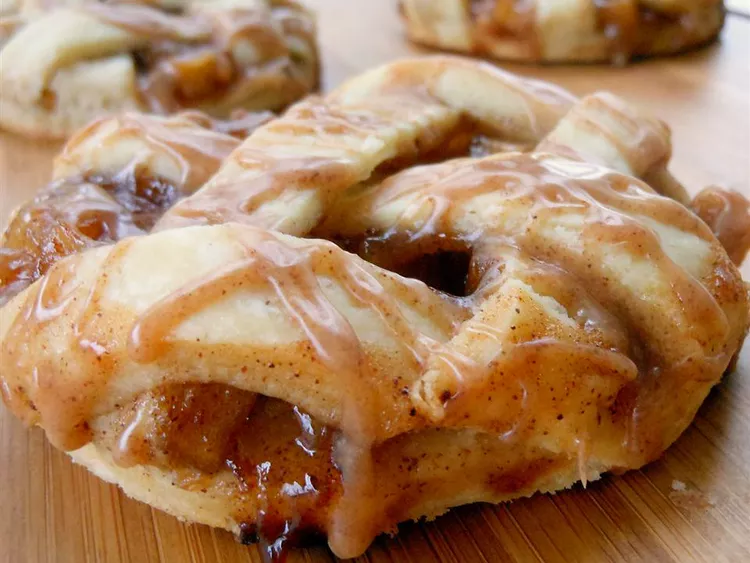

Apple Pie Cookies

This apple pie cookies recipe is a perfect use for apples in the fall. The cookies look and taste great!
Ingredients:
- Apple pie
- Butter: 1/4 Cup
- Brown Sugar: 1/2 Cup
- Apples: 4, peeled and diced into 1/4 inch cubes
- Lemon Juice: 1 1/2 tsp
- Ground Cinnamon: 1 1/2 tsp
- Vanilla Extract: 1/2 tsp
- Salt: 1/4 tsp
- Ground Nutmeg: 1/4 tsp
- Ground Allspice: 1/4 tsp
- Ground Cloves: 1/8 ground cloves
- Water: 2 tbsp
- Cornstarch: 1 tbsp
- Pastry Sheets: 4
- All Purpose Flour 1 tsp
- Cinnamon Glaze:
- Confectioner's Sugar: 3/4 Cup
- Ground Cinnamon: 1 tsp
- Vanilla Extract: 1 tsp
- Milk: 1 2/2 tbsp
Method:
- Preheat the oven to 350 degrees F (175 degrees C).
- Make the Apple Pie Mixture
- Melt butter in a saucepan over medium heat.
- Add apples; toss until coated with butter.
- Stir in brown sugar, white sugar, lemon juice, 1 ½ teaspoons cinnamon, 1/2 teaspoon vanilla extract, salt, nutmeg, allspice, and cloves; cook and stir until apples have softened and sugars have melted, about 5 minutes.
- Bring to a boil.
- Combine water and cornstarch in a bowl.
- Stir cornstarch mixture into the apple mixture; cook and stir until apple mixture is thickened, about 5 minutes.
- Remove from heat; cool completely, about 20 minutes.
- Roll out 1 sheet of pie crust on a work surface with a rolling pin; cover with half of the cooled apple mixture.
- Roll out a second sheet of pie crust with a rolling pin; slice into 1/2-inch wide strips with a sharp knife.
- Weave pie crust strips together over the apple mixture to create a lattice top
- Flour a round cookie cutter or drinking glass. Press cookie cutter through the dough to create 12 round pies.
- Transfer to a baking sheet
- Bake in the preheated oven until crust is cooked through and golden brown, about 20 minutes.
- Transfer to a wire rack to cool, about 10 minutes
- Repeat with remaining pie crusts and apple mixture; place on a second baking sheet.
- Bake in the oven until crust is cooked through and golden brown, about 20 minutes.
- Make the Glaze
- Combine confectioners' sugar and 1 teaspoon cinnamon in a mixing bowl; add 1 teaspoon vanilla extract.
- Stir in milk slowly until desired consistency is reached; drizzle over cooled pies.
enjoy!
Index